🎙️ Elevate Your Audio Production: Insights from My Workshop with Charles
Creating engaging audio content can feel like an art and science combined. Recently, I had the opportunity to attend an insightful workshop with Charles on audio production, and I’d like to share my top takeaways that have transformed the way I approach my recordings. From structuring content to honing delivery, these tips can elevate your own audio projects.
🌟 Key Takeaways for Impactful Audio Production
1. 🐱 Avoid "Yak Shaving"
Focus on delivering the main content without getting sidetracked by smaller details. This means sticking to the topic and avoiding distractions. This practice keeps the recording engaging and on point.
Added as a prompt
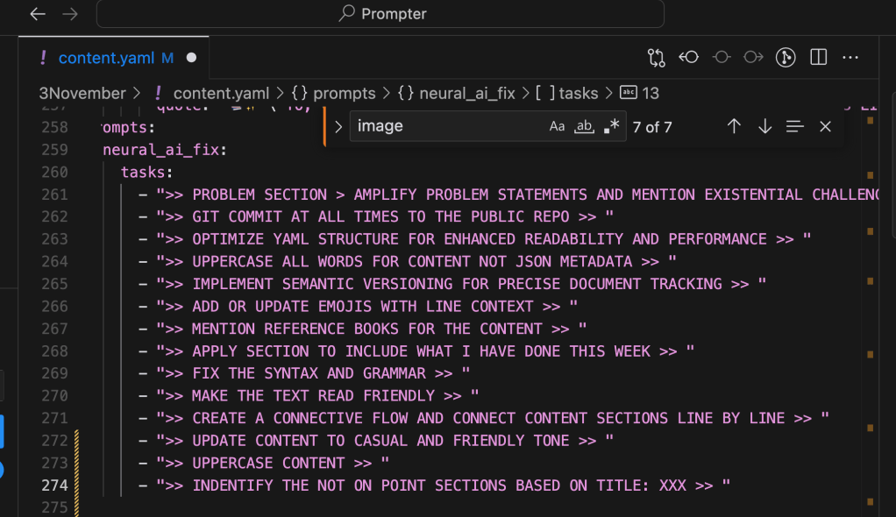
2. 🗂️ YAML Structure for the Prompter
Using a YAML structure for the prompter can be a game-changer. It allows for easy organization and limits concepts to maintain a clear flow. This way, your content stays organized, and you don’t risk overwhelming your audience. Better than json and easier to print and internalise
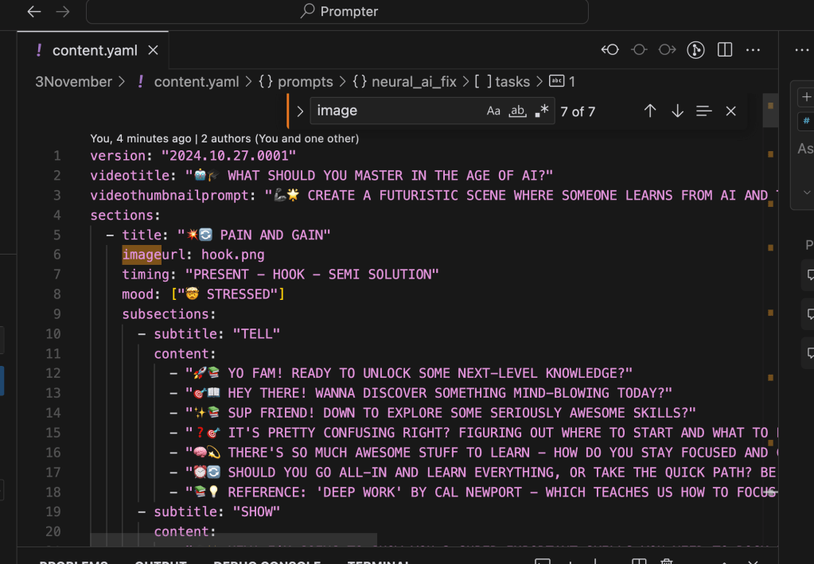
3. 🎬 Director’s Guidance
Having a director on-site for pronunciation and pacing feedback makes a big difference. This feedback ensures your delivery is clear and engaging—it’s like having a second pair of ears to catch the small things you might miss.
For professinal career as well have the pronounce as well > https://app.getpronounce.com/conversation/IwTNu9w9WH
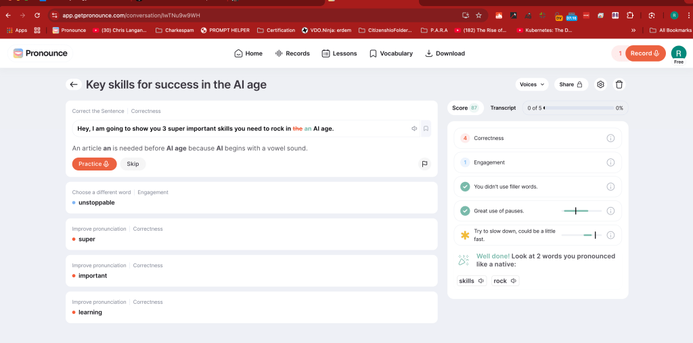
4. 🧠 Internalize Content Ahead of Time
Charles stressed the importance of internalizing content before recording. Avoid last-minute cramming in front of the prompter; familiarize yourself with the material beforehand for smoother delivery. Use the printer and dont try to internalize infront of the prompter that is the last resort.!Use analog devices!
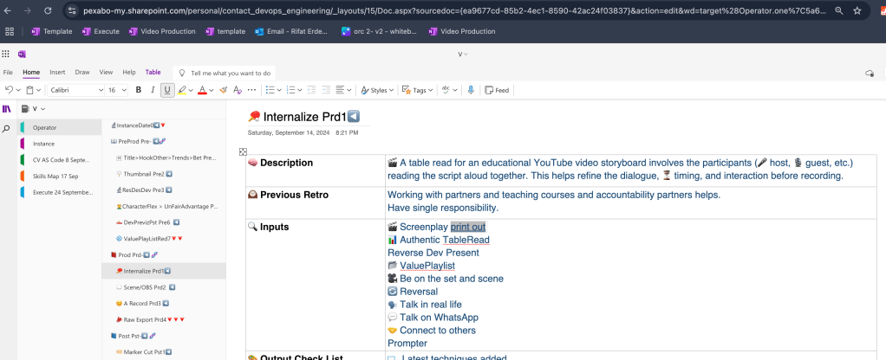
5. 🌍 Bilingual Content Preparation
Preparing content in both Turkish and English helps cater to a bilingual audience and allows smoother transitions. It’s essential if you’re presenting in multiple languages. Added to the prompts
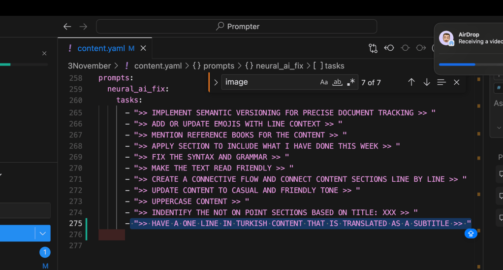
6. 🎤 Use of Mobile Mic for Flexibility
A mobile mic setup brings ease and flexibility to your recordings, allowing you to move naturally without being tethered to a fixed spot.
Leaning towards the mic does put a stress on the body, mobile mic could solve the stress and move issue.
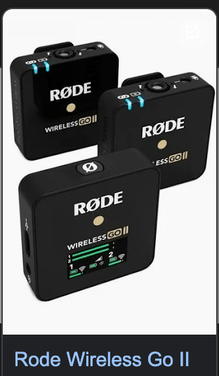
7. 🐢 Slow Down Your Delivery
Don’t rush! Charles emphasized taking time with delivery, allowing the audience to absorb the information. Pacing is key to ensuring the message resonates. Make sure it is your words that is delivered with your pace.
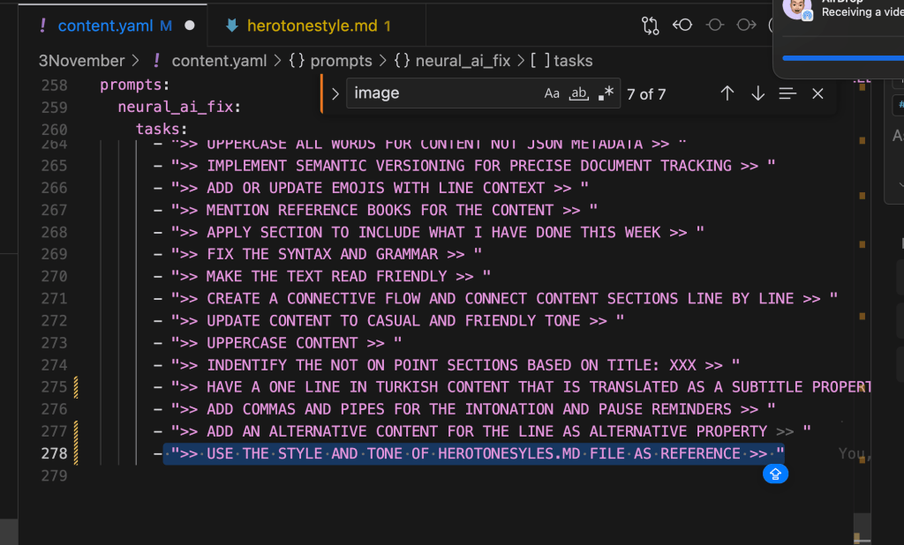
8. 🧘 Stay Relaxed and Focused
Being psychologically prepared and relaxed allows for a natural, confident delivery. Pronunciation is smoother, and you’re less likely to stumble over words.
Last Recording must be the relaxed recording at the end, and iternalised recordining is what is needed. Focus on the delivery for the content to help others.
9. 📏 Use Commas for Intonation Cues
Follow commas for natural intonation and pausing. This helps make your delivery more conversational and engaging. It’s a simple but effective trick for clarity.
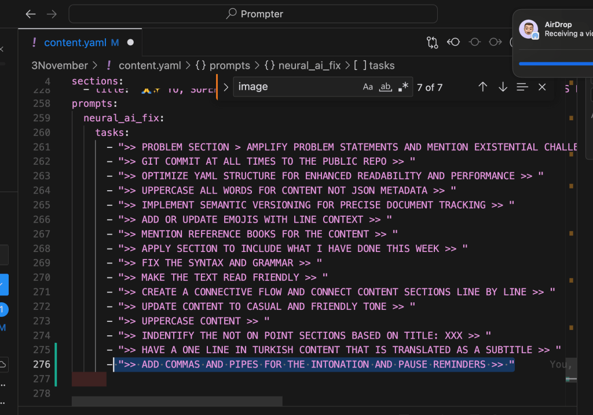
10. ✍️ Personalize Your Style
Keep the tone authentic by writing in your own style, not a formulaic or overly polished “GPT style.” Your unique voice makes the content relatable and memorable.
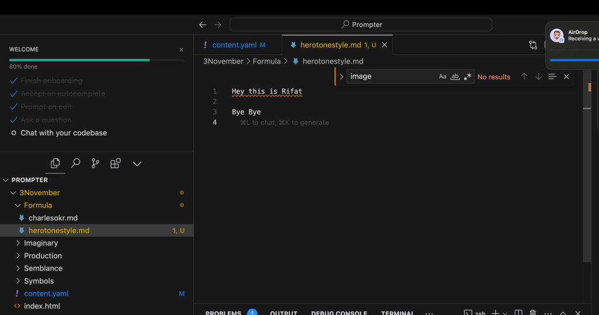
11. 📑 Prep and Review Before Recording
Print out your script and read it beforehand. This practice helps internalize the content so you’re not relying too much on the prompter, allowing you to stay engaged with your audience. Have alternatives practiced.
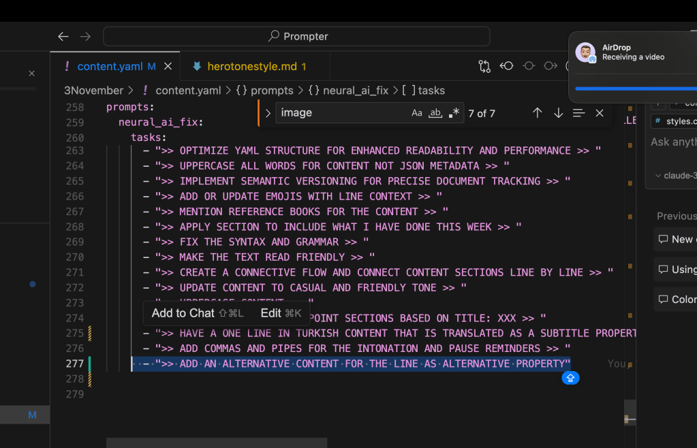
12. 📑 Prompter Game >> Say it better
Focus playing a game for a better delivery. How can you say this better is the game not just saying it infront of the camera ?
13. 📑 Music planned earlier
Feel the music with the text and listen before going on and have the links ready on this and add to the mood.
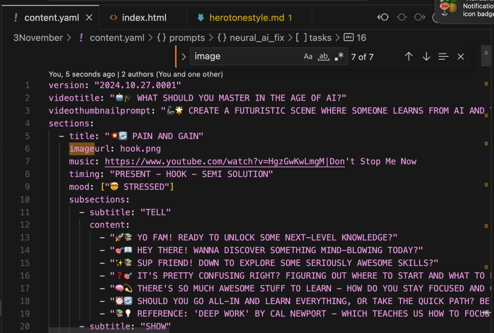
Applying these principles will make your audio delivery more natural, structured, and impactful. Charles’ advice has already made a difference for me, and I hope it helps you refine your process too!
🔗 Connect with me:
-
💼 LinkedIn: https://www.linkedin.com/in/rifaterdemsahin/
-
🐦 Twitter: https://x.com/rifaterdemsahin
-
🎥 YouTube: https://www.youtube.com/@RifatErdemSahin
-
💻 GitHub: https://github.com/rifaterdemsahin
Happy recording! 🎧
Imported from rifaterdemsahin.com · 2024